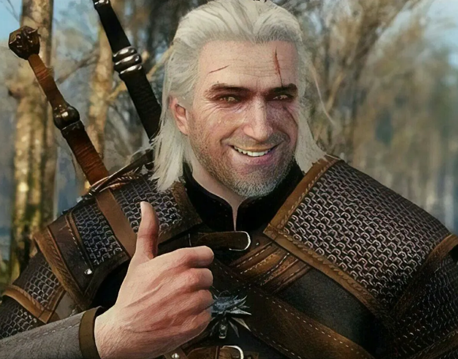

Geralt of Rivia, Andrzej Sapkowski'nin Witcher kitap serisinin ana karakteridir ve "Beyaz Kurt" olarak da tanınır. 1160 yılında Kaedwen'deki bir kasabada doğmuştur. Geralt, Witcher'ların eğitim aldığı Kaer Morhen'de büyümüş ve burada çeşitli mutasyonlar geçirerek bir Witcher (canavar avcısı) olmuştur. Geralt’ın annesi, büyücü Visenna'dır, ancak babasıyla ilgili çok az bilgi vardır, hatta doğumundan sonra kaybolmuştur. Geralt, Rivia adını, bir kasabada kazandığı ününden dolayı almıştır; aslında Rivya'da doğmamıştır.
Geralt, güçlü bir mutanttır ve doğal yeteneklerinin yanı sıra, çeşitli canavarlara karşı etkili olabilen iksirler ve büyüler kullanma yeteneğine sahiptir. Özellikle canavar avcılığı konusunda uzmanlaşmış olan Geralt, kendisini çoğu zaman etik ve moral sorunlarla karşı karşıya bulur. Zamanla "Beyaz Kurt" lakabıyla tanınan Geralt, hem ölümsüzlük yakınında bir yaşam sürer hem de bir dizi önemli karakterle tanışır: Yennefer of Vengerberg, Ciri ve Dandelion gibi figürler onun hayatında önemli yerler tutar.
Geralt'ın yaşamı, yalnızca canavarları avlamakla değil, aynı zamanda karmaşık bir ahlaki dünyada doğruyu ve yanlışı ayırt etmeye çalışarak devam eder. Geralt, soğukkanlı ve dışarıdan sert bir kişilik olarak görülse de, derinlerde duygusal ve insancıl bir karaktere sahiptir. Bu, onu bir kahraman yapmaktan çok, insana özgü karmaşayı ve zorlukları temsil eden bir figür haline getirir.